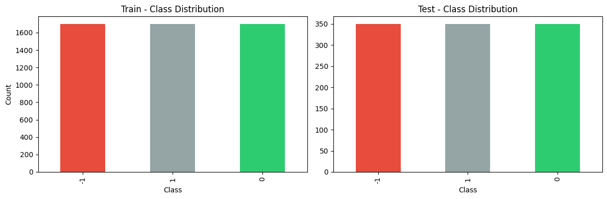
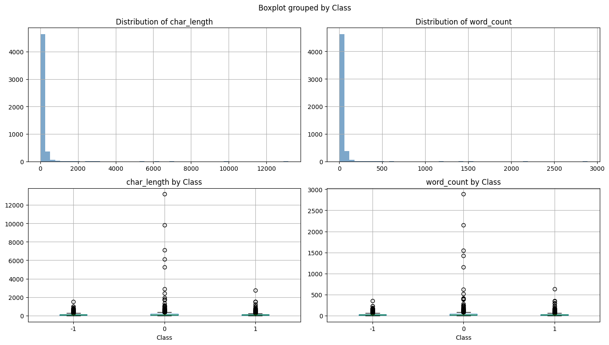
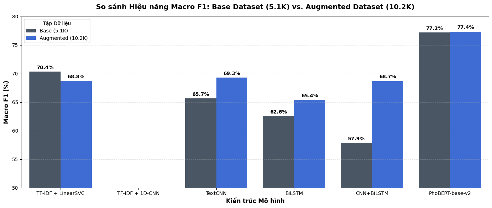
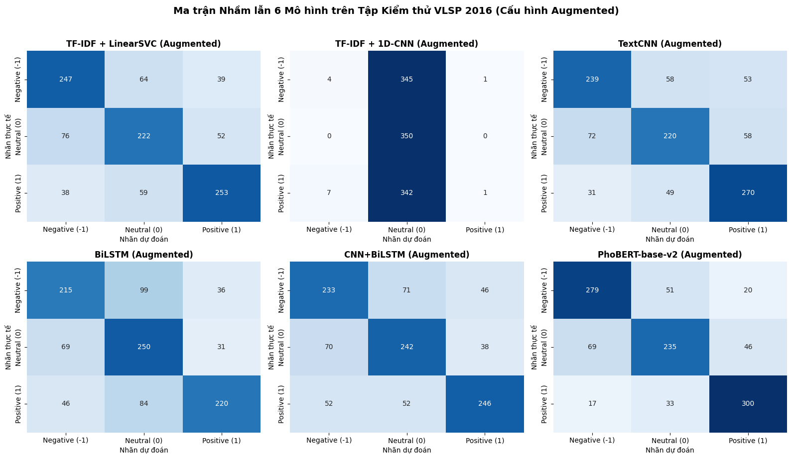

Tài liệu bài tập
Nội dung dựa trên code và outputs thực nghiệm 12 lượt chạy trong notebook sentimentanalysis.ipynb.
Notebook
Notebook hoàn chỉnh với 36 cells và 12 lượt chạy đã lưu outputs đầy đủ trên Colab.
PDF report
Báo cáo riêng của bài tập lớn này
YouTube
Video Public hoặc Unlisted · khuyến nghị 5–10 phút
Mô tả tập dữ liệu
- Bài toán
- Phân loại cảm xúc có giám sát, ba lớp.
- Tập dữ liệu / Nguồn
- VLSP Sentiment Dataset · Kaggle ↗
- Dữ liệu gốc & Tăng cường
- 6,150 văn bản gốc (5,100 phát triển + 1,050 test); tập tăng cường đạt 11,199 mẫu (10,149 phát triển + 1,050 test).
- Cột và ngôn ngữ
- Class (nhãn), Data (văn bản tiếng Việt).
- Nhãn gốc → nhãn mô hình
- −1 → 0: tiêu cực; 0 → 1: trung lập; +1 → 2: tích cực.
Notebook đọc hai CSV train/test từ Kaggle, phân tách bằng tab. Outputs ghi nhận không có giá trị thiếu ở Class hoặc Data trong cả hai tập. Cả 12 lượt chạy thử nghiệm đều sử dụng chung một tập test độc lập 1,050 mẫu (350 mẫu/lớp) để đảm bảo tính so sánh khách quan tuyệt đối.
Khám phá dữ liệu (EDA)
Tập phát triển gốc có đúng 1,700 mẫu mỗi lớp (33.3%); test có 350 mẫu mỗi lớp. Cân bằng nhãn giúp đọc accuracy cùng macro-F1, nhưng không bảo đảm các cách diễn đạt hoặc chủ đề được phân bố đều.


Train trong hình là 5,100 mẫu gốc, chưa tách validation; test gồm 1,050 mẫu. Mỗi lớp chiếm một phần ba trong cả hai tập.
Độ dài và các trường hợp cần kiểm tra
| Thước đo | Trung bình | Trung vị | Q1 / Q3 | Nhỏ nhất / Lớn nhất |
|---|---|---|---|---|
| Số ký tự | 129.75 | 81 | 45 / 146 | 2 / 13,164 |
| Số đơn vị tách bằng khoảng trắng | 29.35 | 19 | 10 / 33 | 1 / 2,885 |
Độ dài có đuôi rất dài: 106 mẫu phát triển vượt 500 ký tự. Các văn bản ngắn như “Ngon”, “xấu”, “Đẹp” vẫn có tín hiệu cảm xúc nên code giữ lại. word_count dùng str.split(), chưa phải số từ sau tách từ tiếng Việt. Hai cột độ dài được tính trước làm sạch, không tính lại và không làm đầu vào mô hình.


Hình dùng 5,100 mẫu phát triển trước làm sạch. Giá trị cực đại lớn hơn nhiều trung vị; ngưỡng đầu vào 300 từ đã biết và 256 token của các nhánh là các đơn vị khác nhau.
Từ vựng và cách viết
EDA bằng lower().split() đếm 149,705 đơn vị và 12,638 dạng khác nhau. “không” xuất hiện 1,523 lần, “ko” 804 lần; đây là bằng chứng cho nhu cầu chuẩn hóa cách viết và giữ phủ định. Trong lớp tích cực có các từ thường gặp như “quá”, “rất”, “đẹp”; tần suất đơn lẻ không chứng minh một từ quyết định nhãn hay quan trọng đối với mô hình.
| Quan sát | Bằng chứng | Xử lý / Giới hạn |
|---|---|---|
| Ba lớp cân bằng | 1,700/lớp ở tập phát triển; 350/lớp ở test. | Dùng cross-entropy thường và báo cáo macro-F1; đánh giá đồng đều cả 3 lớp. |
| Văn bản rất ngắn và rất dài | Trung vị 81 ký tự; lớn nhất 13,164. | Giữ mẫu ngắn; pad/cắt chuỗi cho mô hình (300 từ cho Word2Vec, 256 token cho PhoBERT). |
| Nhiều cách viết phủ định | “không”: 1,523; “ko”: 804 lần. | Chuẩn hóa teencode; giữ nguyên từ phủ định để không làm đảo ngược cảm xúc. |
| Không thiếu dữ liệu | Class và Data: 0 giá trị thiếu ở hai tập. | Không loại dòng vì thiếu dữ liệu; giữ nguyên cấu trúc phân bố ban đầu. |
Chuẩn bị dữ liệu
Làm sạch văn bản gốc
- Đưa về chữ thường và chuẩn Unicode NFC, áp dụng cho cả train/test gốc.
- Đổi emoticon thành từ trước khi lọc ký tự: :) → “cười”, :( → “buồn”, ^^ → “vui”. Chỉ các mẫu trong quy tắc được chuyển; không phải toàn bộ emoji đều được bảo toàn.
- Thay teencode theo từ điển: ko/k/kh → “không”, dc/đc → “được”, sp → “sản phẩm”, dt/đt → “điện thoại”. Quy tắc giúp bảo tồn ngữ nghĩa chính xác trước khi trích xuất vector hoặc token.
- Lọc ký tự ngoài chữ/số/dấu gạch dưới, khoảng trắng và dấu câu , . ? !; thu gọn khoảng trắng. Giữ dấu tiếng Việt và phủ định. Phần xóa stopword được bỏ qua để tránh mất thông tin phủ định.
Sau làm sạch, tập gốc giữ nguyên 5,100 mẫu phát triển và 1,050 mẫu test. Tập tăng cường (Augmented) gồm 10,149 mẫu được tạo ra thông qua dịch vòng (Việt → Anh → Việt), nhân đôi độ đa dạng về cú pháp.
Ba nhánh biểu diễn đầu vào
| Tiêu chí | TF-IDF (LinearSVC & 1D-CNN) | Word2Vec (TextCNN, BiLSTM, CNN+BiLSTM) | PhoBERT-base-v2 |
|---|---|---|---|
| Dữ liệu phát triển | Base: 5,100 mẫu làm sạch. Augmented: 10,149 mẫu (dịch vòng Back-translation Vi→En→Vi). | Base: 5,100 mẫu làm sạch. Augmented: 10,149 mẫu (dịch vòng Back-translation Vi→En→Vi). | Base: 5,100 mẫu làm sạch. Augmented: 10,149 mẫu (dịch vòng Back-translation Vi→En→Vi). |
| Tách từ / Từ vựng | Chuẩn hóa NFC, chuyển emoticon/teencode; trích xuất n-gram (1,2), max_features=5,000. | Xóa chữ số ASCII; PyVi tách từ. Từ vựng fit trên tập train, tra cứu qua vi-model-CBOW 400 chiều. | Chuẩn hóa NFC, chuyển emoticon/teencode; tokenize subword BPE qua vinai/phobert-base-v2. |
| Biểu diễn & Độ dài | Ma trận thưa (N, 5000) cho LinearSVC; tensor dense reshape (N, 1, 5000) cho 1D-CNN. | Cắt/đệm tối đa 300 từ (pre-padding 0); ma trận embedding (V, 400) trainable. | padding="max_length", truncation=True, max_length=256 token; input_ids và attention_mask. |
Khác với Word2Vec cần PyVi tách từ trước, PhoBERT-base-v2 sử dụng Fast BPE Tokenizer với vốn từ vựng 64K subword, cho phép xử lý linh hoạt cả từ đơn lẫn cụm từ phức tạp trong tiếng Việt.
Kho mã nguồn PhoBERT chính thức của VinAI Research ↗
Chia tập và vai trò validation/test
| Phân vùng dữ liệu | Train | Validation | Test | Phương pháp & Tỷ lệ chia |
|---|---|---|---|---|
| Base Dataset (Tất cả mô hình) | 4,080 | 1,020 | 1,050 | 80% Train / 20% Val từ 5,100 mẫu gốc; test 1,050 mẫu độc lập (350 mẫu/lớp). |
| Augmented Dataset (Word2Vec & TF-IDF) | 8,120 | 2,029 | 1,050 | 80% Train / 20% Val từ 10,149 mẫu tăng cường; giữ nguyên 1,050 mẫu test chuẩn. |
| Augmented Dataset (PhoBERT) | 9,134 | 1,015 | 1,050 | 90% Train / 10% Val (stratified, seed 42) từ 10,149 mẫu tăng cường; giữ nguyên 1,050 mẫu test. |
Tất cả 12 lượt chạy đều được đánh giá trên cùng tập test 1,050 mẫu cố định (350 mẫu mỗi lớp: tiêu cực, trung lập, tích cực), bảo đảm tính kiểm soát chặt chẽ và so sánh trực diện (fair benchmark). Tập validation được dùng độc lập để theo dõi loss và chọn checkpoint tối ưu.
Ở tập Augmented, phương pháp dịch vòng back-translation nhân đôi dữ liệu huấn luyện giúp mô hình học thêm đa dạng ngữ cảnh; việc cố định hoàn toàn tập test 1,050 mẫu đảm bảo các chỉ số đo lường phản ánh chân thực năng lực tổng quát hóa.
Phân tích và mô hình hóa
Kiến trúc và cách huấn luyện
| Mô hình | Kiến trúc và Siêu tham số chính |
|---|---|
| TF-IDF + LinearSVC | TfidfVectorizer(ngram_range=(1,2), max_features=5000) kết hợp scikit-learn LinearSVC(C=1.0, max_iter=2000). Huấn luyện CPU tức thì (<1 giây). |
| TF-IDF + 1D-CNN | Dense TF-IDF (1, 5000) → Conv1d(1, 64, k=5) + ReLU + MaxPool1d(2) → Conv1d(64, 128, k=5) + AdaptiveAvgPool1d(1) → Dropout(0.5) → Linear(128, 3). Adam lr=1e-3, 15 epoch. |
| TextCNN | Embedding(V, 400) trainable từ Word2Vec CBOW → Conv1d song song kernel 3/4/5 (100 filters mỗi nhánh) → ReLU + Global Max Pooling → Dropout(0.5) → Linear(300, 3). Adam lr=1e-3, batch 256. |
| BiLSTM | Embedding(V, 400) trainable → BiLSTM 2 chiều (hidden 64/chiều, output 128) → Sequence Mean Pooling → Linear(128, 3). Adam lr=1e-3, batch 256. |
| CNN+BiLSTM | Embedding(V, 400) trainable → Conv1d 128 filters, kernel 3 + ReLU → BiLSTM hidden 64/chiều → Sequence Mean Pooling → Dropout(0.5) → Linear(128, 3). Adam lr=1e-3, batch 256. |
| PhoBERT-base-v2 | vinai/phobert-base-v2 (12 layers Transformer, hidden 768, 12 heads, ~135M params) + Sequence Classification head 3 lớp. AdamW lr=2e-5, warmup 100 steps, batch 32 (8x4 grad accum), FP16, 6 epoch, chọn checkpoint tốt nhất theo val macro-F1. |
Ba mô hình Word2Vec (TextCNN, BiLSTM, CNN+BiLSTM) và 1D-CNN dùng CrossEntropyLoss, Adam (LR 1e-3, weight decay 1e-5), batch 256 và gradient clipping norm 1. Huấn luyện 15 epoch, ghi nhận điểm hội tụ tốt nhất qua checkpoint validation loss.
PhoBERT-base-v2 dùng AdamW lr=2e-5, weight decay 0.01, warmup 100 steps, cosine lr scheduler, FP16 và 6 epoch. Batch train 8 mỗi thiết bị × 4 bước tích lũy gradient (tương đương effective batch size 32); batch đánh giá 16. Checkpoint được đánh giá và lưu ở cuối mỗi epoch, tự động tải mô hình tốt nhất theo validation macro-F1 (load_best_model_at_end=True).
Trên tập Base, CNN+BiLSTM chịu hiện tượng overfitting rõ nhất khi val loss tăng sớm, đạt Macro F1 57.86%. Tuy nhiên khi chuyển sang tập Augmented, chính mô hình này có bước nhảy vọt ấn tượng nhất lên 68.71% (+10.85%). PhoBERT-base-v2 thể hiện sự ổn định vượt bậc trên cả hai tập, hội tụ nhanh chóng chỉ sau 6 epoch.
Kết quả đối chuẩn 12 lượt chạy
Accuracy là tỷ lệ dự đoán đúng; precision và recall phản ánh độ chính xác của dự đoán theo lớp và mức thu hồi mẫu thật. Macro-F1 lấy trung bình F1 của ba lớp, cho mỗi lớp trọng số ngang nhau. Bảng dùng số chính xác từ output tổng hợp trên 1,050 mẫu test.
| Mô hình & Tập dữ liệu | Accuracy | Precision (macro) | Recall (macro) | Macro F1 | Weighted F1 |
|---|---|---|---|---|---|
| PhoBERT-base-v2 (Augmented) | 77.52% | 77.36% | 77.52% | 0.7736 | 77.36% |
| PhoBERT-base-v2 (Base) | 77.14% | 77.37% | 77.14% | 0.7722 | 77.22% |
| TF-IDF + LinearSVC (Base) | 70.29% | 70.52% | 70.29% | 0.7036 | 70.36% |
| TextCNN (Augmented) | 69.43% | 69.34% | 69.43% | 0.6931 | 69.31% |
| TF-IDF + LinearSVC (Augmented) | 68.76% | 68.77% | 68.76% | 0.6876 | 68.76% |
| CNN+BiLSTM (Augmented) | 68.67% | 68.83% | 68.67% | 0.6871 | 68.71% |
| TextCNN (Base) | 65.52% | 68.32% | 65.52% | 0.6568 | 65.68% |
| BiLSTM (Augmented) | 65.24% | 66.51% | 65.24% | 0.6539 | 65.39% |
| BiLSTM (Base) | 62.76% | 64.87% | 62.76% | 0.6258 | 62.58% |
| CNN+BiLSTM (Base) | 60.29% | 65.11% | 60.29% | 0.5786 | 57.86% |
| TF-IDF + 1D-CNN (Augmented) | 33.81% | 40.04% | 33.81% | 0.1775 | 17.75% |
| TF-IDF + 1D-CNN (Base) | 33.33% | 11.12% | 33.33% | 0.1668 | 16.68% |
PhoBERT-base-v2 trên tập Augmented đạt vị trí quán quân với Accuracy 77.52% và Macro F1 77.36% (0.7736), bám sát ngay sau là PhoBERT-base-v2 trên tập Base (77.14%, 0.7722). Đáng chú ý nhất, TF-IDF + LinearSVC (Base) đạt hạng 3 toàn bảng với Macro F1 70.36%, vượt qua tất cả các mô hình Deep Learning Word2Vec khi chưa tăng cường dữ liệu. Trong khi đó, TF-IDF + 1D-CNN chỉ đạt ~33.8% Accuracy và 0.1775 Macro F1, chứng minh tích chập 1D không thể học được đặc trưng ngữ nghĩa từ biểu diễn vector n-gram thưa thớt.
Tác động của Tăng cường dữ liệu (Data Augmentation Gain)
| Mô hình | Macro F1 (Base) | Macro F1 (Augmented) | Chênh lệch (Δ) | Tăng trưởng tương đối |
|---|---|---|---|---|
| CNN+BiLSTM | 57.86% | 68.71% | +10.85% | +18.75% |
| TextCNN | 65.68% | 69.31% | +3.64% | +5.54% |
| BiLSTM | 62.58% | 65.39% | +2.81% | +4.49% |
| TF-IDF + 1D-CNN | 16.68% | 17.75% | +1.07% | +6.41% |
| PhoBERT-base-v2 | 77.22% | 77.36% | +0.14% | +0.18% |
| TF-IDF + LinearSVC | 70.36% | 68.76% | -1.60% | -2.27% |
Tăng cường dữ liệu bằng dịch vòng (Back-translation) tạo ra sự phân hóa rõ rệt: mô hình phức tạp kết hợp CNN+BiLSTM hưởng lợi vượt bậc với mức tăng +10.85% Macro F1 (+18.75% tương đối), TextCNN tăng +3.64% và BiLSTM tăng +2.81%. PhoBERT đã bão hòa với tri thức tiền huấn luyện lớn nên chỉ tăng nhẹ +0.14%. Ngược lại, TF-IDF + LinearSVC giảm nhẹ -1.60% do dịch vòng làm thay đổi từ vựng và giảm độ tập trung của trọng số TF-IDF n-gram chính xác.


Biểu đồ cột ghép trực quan hóa Accuracy và Macro F1 (%) của cả 12 lượt chạy trên 1,050 mẫu test. PhoBERT dẫn đầu, theo sát bởi LinearSVC và các mô hình Deep Learning sau tăng cường.


Lưới 2x3 thể hiện phân bố dự đoán đúng/sai trên 3 nhãn (-1: tiêu cực, 0: trung lập, 1: tích cực). Lớp trung lập (0) luôn có tỷ lệ dự đoán nhầm cao nhất ở tất cả các mô hình.
Phân tích chi tiết lỗi theo lớp của PhoBERT & Ma trận nhầm lẫn
| Lớp cảm xúc | Precision | Recall | F1 | Số mẫu test | Số mẫu sai | Tỷ lệ sai |
|---|---|---|---|---|---|---|
| Tiêu cực (-1) | 0.81 | 0.80 | 0.80 | 350 | 71 | 20.29% |
| Trung lập (0) | 0.69 | 0.67 | 0.68 | 350 | 115 | 32.86% |
| Tích cực (1) | 0.82 | 0.86 | 0.84 | 350 | 50 | 14.29% |
Lớp trung lập (0) là lớp khó nhất với tỷ lệ lỗi lên tới 32.86% (115/350 mẫu bị đoán sai, Recall chỉ đạt 67.14%). Nguyên nhân chính là các câu trung lập thường chứa cả từ ngữ khen lẫn chê (cảm xúc hỗn hợp) hoặc mang tính mô tả khách quan thiếu từ ngữ cảm thán. Trong khi đó, lớp tích cực (1) có độ chính xác cao nhất (Recall 85.71%, chỉ sai 14.29%), và lớp tiêu cực (-1) đạt Recall 79.71% (sai 20.29%).
Trường hợp dự đoán sai điển hình của PhoBERT
| Câu văn thực tế | Nhãn thật | Dự đoán | Nguyên nhân nhầm lẫn |
|---|---|---|---|
| Dịch vụ bình thường, phòng hơi nhỏ nhưng nhân viên nhiệt tình. | 0 | 1 | Vế khen "nhân viên nhiệt tình" ở đuôi câu lấn át sắc thái trung lập khách quan ban đầu. |
| Giá hơi cao so với chất lượng mang lại. | -1 | 0 | Câu nhận xét lịch sự, thiếu từ chê gay gắt nên mô hình đánh giá nhầm thành câu trần thuật trung lập. |
| Tạm được, không có gì nổi bật. | 0 | -1 | Cụm phủ định "không có gì" thường gắn với cảm xúc tiêu cực trong dữ liệu huấn luyện. |
| Đồ ăn nhiều nhưng nêm nếm hơi nhạt. | 0 | -1 | Từ "hơi nhạt" kéo trọng số xác suất về phía phàn nàn/tiêu cực dù câu mang ý trung lập. |
| Giao hàng nhanh, đóng gói cẩn thận nhưng sản phẩm dùng nhanh hỏng. | -1 | 1 | Hai vế khen dài ở đầu câu áp đảo vế chê cốt lõi ở cuối câu. |
Tổng kết và mở rộng
Thực nghiệm 12 lượt chạy đối chuẩn cho thấy ba kết luận cốt lõi: (1) PhoBERT-base-v2 đạt chất lượng cao nhất (77.36% Macro F1), khẳng định sức mạnh của mô hình ngôn ngữ lớn tiền huấn luyện cho tiếng Việt. (2) TF-IDF + LinearSVC là baseline cực kỳ mạnh mẽ (70.36% Macro F1), vượt qua cả ba mô hình Deep Learning Word2Vec trên dữ liệu gốc mà không cần GPU. (3) Tăng cường dữ liệu (Back-translation) là "cứu cánh" giúp các mạng sâu phức tạp như CNN+BiLSTM (+10.85% F1) và TextCNN (+3.64% F1) tránh overfitting, nhưng lại làm giảm nhẹ hiệu năng của mô hình dựa trên từ khóa chính xác như TF-IDF (-1.60% F1).
Giới hạn cần nêu trong báo cáo
- Tập test đã được cố định hoàn toàn 1,050 mẫu cho cả 12 lượt chạy (khắc phục giới hạn so sánh không kiểm soát của phiên bản trước). Tuy nhiên, back-translation có thể tạo ra các câu văn chưa hoàn toàn tự nhiên hoặc làm thay đổi nhẹ sắc thái cảm xúc ở các câu ranh giới trung lập.
- Chọn mô hình đồng nhất: Các mô hình Deep Learning đều theo dõi checkpoint validation loss/macro-F1 tối ưu, khắc phục việc lấy trạng thái epoch cuối cùng của thử nghiệm cũ.
- Embedding Word2Vec đã được tách biệt độc lập giữa từng mô hình, không còn nguy cơ chia sẻ bộ nhớ tensor giữa các lần chạy nối tiếp.
- TF-IDF 1D-CNN bị hạn chế căn bản do bản chất vector thưa không có tính chất tương quan không gian cục bộ (spatial local correlation), dẫn đến việc mạng tích chập không trích xuất được n-gram đặc trưng.
- Kết quả đại diện cho một lần chạy cố định seed cho các cấu hình; trong tương lai có thể chạy k-fold cross-validation hoặc nhiều seed ngẫu nhiên để báo cáo khoảng tin cậy (confidence intervals).
Kho mã nguồn PhoBERT chính thức của VinAI Research ↗
Hướng kiểm chứng tiếp theo (chưa thực hiện)
Thử nghiệm các kỹ thuật tiền huấn luyện thích nghi miền (domain-adaptive pretraining / continuing pretraining) cho PhoBERT trên ngữ cảnh thương mại điện tử/đánh giá sản phẩm; áp dụng Focal Loss hoặc Class-weighted Loss để cải thiện Recall cho lớp trung lập (0); và thử nghiệm các phương pháp gán nhãn mềm (label smoothing) cho các câu mang cảm xúc hỗn hợp.